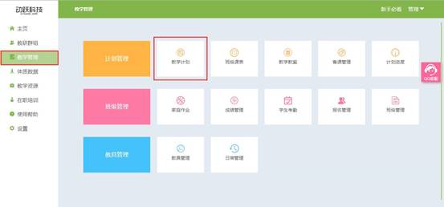

教学计划使用说明
视频教程：
教师制定教学计划，安排本学期课时，即本学期需要授课的课时数量，如本学期上基本运动、田径、球类，及每个授课项目的课时安排。再根据教学计划选择的授课项目及课时，对应安排授课的具体内容。必须保证课时数等于教学大纲选择的课时。
1.登录动跃体育教学管理平台后，进入平台操作界面。
2.点击进入教学管理 > 点击教学计划，如下图:

3.进入教学计划列表页面后，点击新增按钮，按要求选择后，点击确定保存，如下图:
>选择学年：选择需要进行教学的学年。
>选择年级：选择需要授课的年级，多个年级需要一个一个添加。
>选择学期：根据正在上课的日期，选择相对应的学期。

4.按照步骤依次填写内容
步骤1: 填写本学期总课时。
步骤2: 选择教材内容
>教师根据自己授课需要选择本学期授课内容。
>>点击大类后，弹出窗口，显示该分类类别中含有多少个课次，教师输入自己本学期该类别下需要教授多少课时后，即可选择相对应的分类下的课次内容。
>本学期总课时 , 必须排满 , 才可以提交信息，所有课时选择完成后，点击确定，进入下一步骤。
步骤3：进入预览教材内容页面，确认信息内容，修改内容点击返回重新编辑，内容无误后点击保存完成教学计划课时信息。
5. 根据教学计划所选运动项目和教学课时安排教学内容。
步骤1：点击基本运动，点击蓝色文本选择教学详细内容。
步骤2：按要求选择填写，点击确定后，即可成功保存教学安排。
>选择中间类：教学大类下，分成各个具体的运动项目。
>选择更换内容：中间类下面的教案内容，点击保存后，再次点击可更换。
步骤3：进入预览教材内容页面，确认信息内容，修改内容点击返回重新编辑，内容无误后点击保存完成教学计划课时信息。
6.本学期总单元内容 , 必须排满 , 才可以提交信息和预览全部单元内容，如下图:
>未完成单元计划所有内容时提交信息，提示为未完成，确定保存后，会保留该次填写的信息，之后可在教学计划页面重新点击编辑，完成计划进度的选择。
>全部内容添加完成后，点击确认提交保存信息。
7.教学计划完成后，回到教学计划页面，页面展示已经添加完成的教学计划、单元计划及计划进度，右边的选项按钮可对完成的内容进行操作。
>点击教学计划下的蓝色文本，可以预览选择的教学计划详细内容。
>点击单元计划蓝色文本，可以预览选择的单元计划详细内容。
>点击计划进度下的<一键备课>蓝色文本，即可对已经选择的班级进行备课，改班级改学期将按照已经备课的内容进行授课。该操作不可恢复，点击后即备课成功，请谨慎操作。
>点击<查看>按钮，页面展示教材计划与单元计划预览
>若教师需要更改教学内容，则点击<编辑>按钮，页面提示编辑【教学计划】还是【单元计划】。
【教学计划】内容更改会更改所有的内容，相当于重新建立新的内容，只保留所选的年级、班级和学期。操作步骤与前面相同。
【单元计划】只修改后面选择的教学详细内容，教学的课时等不会修改。点击需要更换内容分类，在需要修改的教案名称右边点击<更换>按钮，所有需要更换的内容更换后，点击确定，即完成单元计划的修改。
>若教师对整个教学计划不满意，需要重新编写，则点击<删除>按钮，页面提示【全部删除】还是【只删除单元计划】。
【全部删除】所有内容全部清空，教学计划需从第一步重新开始。
【只删除单元计划】单元计划内容全部清空，重建步骤与前面相同。